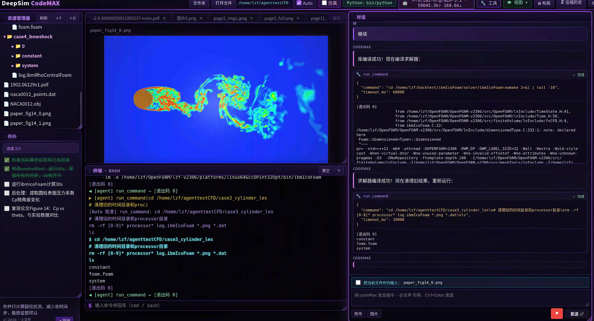

读论文 · 建网格 · 跑 OpenFOAM · 调 ParaView · 看云图 · 判收敛
一个对话框，搞定整条 CFD 工作流。

主界面 · 左侧资源管理器 · 中部 ParaView 渲染 + 终端 · 右侧多轮对话与工具调用
Codex、Claude Code 这类通用助手能写代码，但不懂为什么 blockMesh 报 Negative volume，不懂残差震荡型发散，不懂 0.orig/ 工作流。NullFlux 内置完整 CFD 工程协议、视觉核验闭环和论文复现专用流程，把"懂仿真的工程师"装进对话框。
OpenAI · Anthropic · Google · DeepSeek · Kimi · 通义 · GLM · 智谱 · 本地 vLLM —— OpenAI 兼容协议即可接入。在 CFD 工程任务上，国产模型不仅 token 成本仅为 Claude 的 5–10%，效果反而常常更稳，因为 NullFlux 的中文工程协议为它们量身定制。
7 阶段工作流 (M1→M7) · 9 层 BLAME LADDER 报错排查 · 视觉核验闭环 · 论文参数三遍核对 · 0.orig 工作流 · STL 贴合度采样 · 残差时序流式分析。这些是通用 coding agent 没有的硬协议。
30+ 原子工具、7 阶段闭环、9 层报错恢复。每一项都是为了让算例真正跑出来。
从 blockMesh / snappyHexMesh 到 setFields、求解器、残差、ParaView 渲染、收敛核验一条龙。
VLM 自动检查 STL 法向、网格质量、收敛曲线、云图对称性。算错了模型自己能看出来。
文献核对三遍 + paper_params.lock.md 宪法锁 + DEVIATION REQUEST 偏离申报，杜绝越改越漂移。
求解器报错按 9 层阶梯排查：边界 → 网格 → 时间步 → 物理模型 → 数值格式。不许跳级、不许甩锅论文。
case、几何、结果、token 默认全部留在本机。可全程离线（接本地 vLLM / Ollama）。
颗粒流 MFIX、格子玻尔兹曼 LBM、贝叶斯参数寻优 study 都已内置标准工作流。
前端实时渲染数学公式，再也不是折行 ASCII 拼出来的伪公式。
需要论文图精确数据点？弹手动标注仪，你点几下，结果自动塞回对话上下文。
提示词、错误回复、报告生成全部中文优化。国产模型在这套协议下，仿真任务表现比 GPT-4o / Claude 更稳。
把一次 CFD 任务拆成 7 个阶段，每段必须通过视觉核验才能进下一步。这是工程师该有的纪律。
STL 检查、单位核对、法向 / 封闭性体检。
论文参数提取 + 三遍核对 + 宪法锁定。
blockMesh + snappyHexMesh，STL 贴合采样。
必走 0.orig 工作流，改飞一行回滚。
多相 / 分层算例的"算白算"防御。
残差时序流式抓取，发散自动停。
ParaView 离屏渲染 → VLM 体检 → 论文图比对。
贝叶斯优化 study，baseline 通过后才允许开。
| 能力 | Codex / Cursor | Claude Code | NullFlux |
|---|---|---|---|
| 写 Python / C++ 脚本 | ✓ | ✓ | ✓ |
| 理解 OpenFOAM case 结构 | — | 部分 | 原生 |
| 残差时序判收敛 | — | — | 流式抓取 |
| VLM 视觉核验云图 / 网格 | — | — | 闭环 |
| STL 贴合度采样验证 | — | — | 原子工具 |
| 论文参数宪法锁（防漂移） | — | — | paper_params.lock |
| 9 层报错阶梯排查 | — | — | BLAME LADDER |
| 本地部署 · 数据不外发 | SaaS | SaaS | 本机优先 |
| 使用国产模型 | — | — | 任意切换 |
| Token 成本（同等任务） | 中 | 高 | 国产仅 5–10% |
数据基于 OpenFOAM 圆柱绕流 / 多相分层算例的实测对比。Codex / Claude Code 是优秀的通用编程助手，但它们的设计目标不是工程仿真。
Linux x64 工作站。Windows 用户走 WSL2 即可。
# 1. 下载封装发行版 wget https://github.com/LZF1111/nullflux\ /releases/latest/download/nullflux-linux-sealed.tar.gz # 2. 解包 tar -xzf nullflux-linux-sealed.tar.gz cd sealed # 3. 启动 bash start.sh # → 浏览器打开 http://localhost:5173 # → 配置模型 API Key，开聊
Linux x86_64≥ 18≥ 3.9v8 / v10 / v23065.10+ pvpythonOpenAI 兼容blockMesh 失败 80% 是 STL 单位错、不会盯残差曲线判收敛、不会做 0.orig/ 工作流防回滚。NullFlux 是为仿真工程量身设计的：内置 7 阶段工作流、视觉核验闭环、9 层 BLAME LADDER、论文参数宪法锁，并能直接驱动本地 OpenFOAM / MFIX / ParaView。论文参数 → 网格 → 求解 → 后处理，一气呵成。这才是 CFD 工程师该用的 AI。
▶ 对话发起 → 工具调用 → OpenFOAM 求解 → ParaView 渲染 → 视觉核验闭环